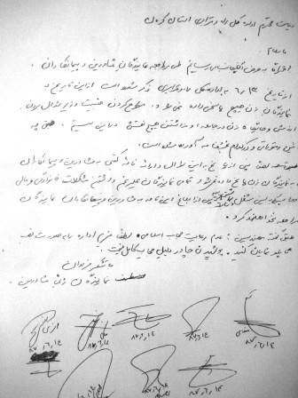

|
|
ورود زنان به اداره کل راه و ترابری استان کرمان ممنوع شد
يكشنبه17 شهریور 1387
تغییر برای برابری- به دستور مدیرکل راه و ترابری استان کرمان و معاونت راهسازی این اداره کل ورود ارباب رجوع زن به این اداره ممنوع شد .
زنان ارباب رجوعی که در مورخ 13/6/87 به ساختمان معاونت راهسازی اداره کل راه و ترابری استان کرمان مراجعه کردند با صحنه ای دور از انتظار و توهین آمیز مواجه شدند . نگهبانان این اداره کل طبق دستور ، از ورود این زنان که عمدتا نمایندگان شرکت های پیمانکاری و مهندسین مشاور طرف قرارداد اداره کل راه و ترابری استان کرمان هستند به ساختمان معاونت راهسازی جلوگیری کردند .
این عده در پاسخ به اعتراض های خود به این موضوع شنیدند که :
از این به بعد باید تمام نمایندگان شرکت های پیمانکاری و مهندسین مشاور ، مرد باشند و دیگر به زنان اجازه ی ورود به این اداره کل و پی گیری کارهایشان داده نخواهد شد .
آنطور که از منابع مختلف از جمله کارمندان اداره کل راه و ترابری استان کرمان شنیده شده است دلیل این تصمیم برقراری ارتباط دوستانه ی یکی از کارمندان این اداره کل با یک نفر از زنان ارباب رجوع بوده است . حتی در صورت صحت این موضوع جا دارد از این آقایان سوال شود که وقتی مطبوعات می نویسند که فرمانده نیروی انتظامی با شش زن دستگیر شد آیا ورود زنان به این ارگان ممنوع می شود ؟ یا وقتی که در این چند سال اخیر به طور مکرر خبر دستگیری کارمندان دانشگاه ها را با دختران دانشجو درجراید می خوانیم ، آیاباید ورود بانوان به دانشگاه ها غدقن گردد ؟

یک روز بعد ، یعنی در تاریخ 14/6/87 تعدادی از این خانم ها با نوشتن نامه ای به مدیر کل راه و ترابری استان کرمان به این موضوع اعتراض کرده و خواستار آن شدند که وضعیت به حالت سابق برگردد و یا عدم اجازه ی ورود بانوان به این اداره کل به صورت کتبی به شرکت های مطبوع شان اعلام گردد . البته تا کنون پاسخی به این نامه داده نشده است و مسئولین آن اداره کل از دادن دستور کتبی در این مورد سر باز می زنند .
با اینکه چندین روز از شروع این ماجرا می گذرد هنوز هم دبیرخانه ی اداره کل راه و ترابری استان کرمان هیچ نامه ای را از ارباب رجوع های زن تحویل نمی گیرد و پاسخ هیچ نامه ای را هم به آنها نمی دهد در حالی که مردان به راحتی مثل سابق به مراجعات خود و پی گیری کارهایشان ادامه می دهند